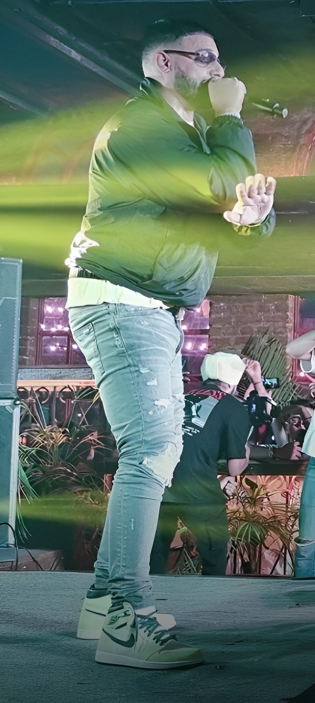

Dior is a French luxury fashion house, controlled and chaired by French businessman Bernard Arnault, The company was founded in 1946 by French fashion designer Christian Dior, who was originally from Normandy. This brand just sells shoes and clothing and can only be bought in Dior stores, Pietro Beccari has been the CEO of Christian Dior Couture since 2018.

Balenciaga is a luxury fashion house founded in 1919 by the Spanish designer Cristóbal Balenciaga in San Sebastian, Spain, Balenciaga produces ready-to-wear, footwear, handbags, and accessories, The brand is currently owned by the French corporation Kering.

Amiri is a luxury fashion house that was launched in 2014 by American fashion designer Mike Amiri, who is from Hollywood, Los Angeles, California, U.S.His rock n’ rock aesthetic led him to design an exclusive capsule collection for the LA concept store, Maxfield, The designer's early DIY sensibility evolved and today, his menswear and womenswear lines reflect LA's authentic streetwear culture.Amiri produces hand-embellished denim jeans, leather jackets, grungy flannel shirting, and graphic tshirts.

Louis Vuitton is a French high-end luxury fashion house and company founded in 1854 by Louis Vuitton, The label's LV monogram appears on most of its products, ranging from luxury bags and leather goods to ready-to-wear, shoes, watches, jewelry, accessories, sunglasses and books.

Essential is a luxury fashion house that was founded by American fashion and sneaker designer Jerry Lorenzo, which is the founder of the American luxury streetwear label Fear of God, in 2018 he introduced a "competitively priced sister label" to Fear of God, this label was "ESSENTIALS" which was a subsidiary to his main brand, Fear Of God.

Gucci is an Italian high-end luxury fashion house based in Florence, Italy. Its product lines include handbags, ready-to-wear, footwear, accessories, and home decoration; Gucci was founded in 1921 by Guccio Gucci (1881–1953) in Florence, Tuscany Under the direction of Aldo Gucci (son of Guccio), In 1999, Gucci was acquired by the French conglomerate Pinault Printemps Redoute, which later became Kering.Alessandro Michele was the creative director from January 2015 to November 23, 2022.
Saint Laurent and YSL, is a French high-end luxury fashion house founded in 1962 by Yves Saint Laurent and his partner, Pierre Bergé. The company produces ready-to-wear, leather accessories, and footwear. Its cosmetics line, YSL Beauty, is owned by L'Oréal.

Dolce & Gabbana also known by the initials D&G, is an Italian luxury fashion house founded in 1985 in Legnanoit was founded by Italian designers Domenico Dolce and Stefano Gabbana.The house specializes in ready-to-wear, handbags, accessories, and cosmetics.

Givenchy is a French luxury fashion and perfume house. it produces ready-to-wear clothing, accessories, perfumes, and cosmetics of Parfums Givenchy. The house of Givenchy was founded in 1952 by designer Hubert de Givenchy From 2 May 2017 until 10 April 2020, its artistic director was Clare Waight Keller.
Nike is an American multinational corporation that is engaged in the design, development, manufacturing, and worldwide marketing and sales of footwear, apparel, equipment, accessories, and services. The company is headquartered near Beaverton, Oregon, in the Portland metropolitan area. The company was founded on January 25, 1964, as "Blue Ribbon Sports", by Bill Bowerman and Phil Knight, and officially became Nike, Inc. on May 30, 1971. Nike markets its products under its own brand, as well as Nike Golf, Nike Pro, Nike+, Air Jordan, Nike Blazers, Air Force 1, Nike Dunk, Air Max, Foamposite, Nike Skateboarding, Nike CR7,[10] and subsidiaries including Air Jordan and Converse.
Adidas is a German multinational corporation, founded and headquartered in Herzogenaurach, Bavaria, that designs and manufactures shoes, clothing and accessories. The company was started by Adolf Dassler in his mother's house; he was joined by his elder brother Rudolf in 1924 under the name Gebrüder Dassler Schuhfabrik ("Dassler Brothers Shoe Factory"). Dassler assisted in the development of spiked running shoes (spikes) for multiple athletic events. To enhance the quality of spiked athletic footwear, he transitioned from a previous model of heavy metal spikes to utilizing canvas and rubber.In 1949, following a breakdown in the relationship between the brothers, Adolf created Adidas and Rudolf established Puma, which became Adidas's business rival.
Rolex is a British-founded Swiss watch designer and manufacturer based in Geneva, Switzerland.Founded in 1905 as Wilsdorf and Davis by Hans Wilsdorf and Alfred Davis in London, the company registered Rolex as the brand name of its watches in 1908 and became Rolex Watch Co. Ltd. in 1915.Since 1960, the company has been owned by the Hans Wilsdorf Foundation, a private family trust.
Audemars Piguet is a Swiss manufacturer of luxury watches and clocks, headquartered in Le Brassus, Switzerland. The company was founded by Jules Louis Audemars and Edward Auguste Piguet in the Vallée de Joux in 1875, acquiring the name Audemars Piguet & Cie in 1881. The company is best known for introducing the Royal Oak wristwatch in 1972One of its earlier achievements was creating the first minute-repeating movement in 1892.
Prada is an Italian luxury fashion house founded in 1913 in Milan by Mario Prada.It produces in leather handbags, travel accessories, shoes, ready-to-wear, and other fashion accessories. Key people are Miuccia Prada (head designer) & Andrea Guerra (CEO).


Cartier is a French high-end luxury goods conglomerate that designs, manufactures, distributes, and sells jewellery, leather goods, and watches, Founded by Louis-François Cartier (1819–1904) in Paris in 1847, The company is headquartered in Paris, King Edward VII referred to Cartier as "the jeweller of kings and the king of jewellers."[4][16] For his coronation in 1902.

Burberry is a British luxury fashion house established in 1856 by Thomas Burberry headquartered in London, England. It currently designs and distributes ready to wear, including trench coats (for which it is most famous), leather accessories, and footwear.
Christian Louboutin is a French fashion designer whose high-end stiletto footwear incorporates shiny, red-lacquered soles, he started his own shoe salon in Paris, His company has since branched out into men's luxury footwear, handbags, fragrances and makeup.

Fendi is an Italian high-end luxury fashion house, producing fur, ready-to-wear, leather goods, shoes, fragrances, eyewear, timepieces and accessories. Founded in Rome in 1925, Fendi is known for its fur, fur accessories, and leather goods. Its headquarters are in Rome, in the Palazzo della Civiltà Italiana.
Moncler is an Italian high-end luxury fashion house , which produces ready-to-wear outerwear headquartered in Milan, Italy. it produces down jacket boutique, Moncler has expanded to design vests, raincoats, windbreakers, knitwear, leather goods, footwear, fragrance, and related accessories Founded in 1952 in the Alpine town of Monestier-de-Clermont, France, Moncler quilted jackets were used by cold-weather workers, mountaineers, and skiers throughout Europe.
Marcelo Burlon is Italian luxury fashion brand, In 2012, together with Davide De Giglio and Claudio Antonioli, he founded the brand Marcelo Burlon County of Milan, with the launch of a line of t-shirts that have an immediate success. Marcelo burlon is the cult of Italian streetwear and the pioneer of what streetwear is today.

Valentino is an Italian luxury fashion house founded in 1960 by Valentino Garavani, Valentino is headquartered in Milan, while the creative direction is in Rome. Valentino Produces Clothing, Footwear, Glasses, Perfumes, Watches and Accessories, Valentino's CEO is Stefano Sassi.
![Being human Logo]()
The Being Human brand is a Mumbai-based fashion house, founded by Bollywood star Salman Khan, In the year 2009, Being Human Foundation under Salman Khan launched its own brand, being human produces Clothing, watches and jewellery; the watches brand were sold under beinghumanwatches.com
Puma is a German multinational corporation that designs and manufactures athletic and casual footwear, apparel and accessories, which is headquartered in Herzogenaurach, Bavaria, Germany. The company was founded in 1948 by Rudolf Dassler. he was joined by his younger brother Adolf in 1924 under the name Gebrüder Dassler Schuhfabrik ("Dassler Brothers Shoe Factory"). In 1949, following a breakdown in the relationship between the brothers, Adolf created Adidas and Rudolf established Puma, which became Adidas's business rival.

Ronnie Fieg is an American footwear and clothing designer, entrepreneur, and the owner-operator of the American retail fashion establishment and brand Kith. On November 11, 2011, Fieg opened up his own apparel and footwear boutique called Kith NYC. Kith carries brands including Yeezy, Stampd, Timberland, Adidas, Red Wing, Clarks, Asics, Danner, New Balance, Nike, Gourmet, and Native Footwear. releasing his own sneaker collaborations.

Palm Angels is a luxury fashion label founded in 2015 by Italian art director and photographer, Francesco Ragazzi, who is also the former artistic director of Moncler, Its Headquarters are in Milan, Italy, and its products are Clothing, shoes, and accessories.

The converse is an American lifestyle brand that markets, distributes, and licenses footwear, apparel, and accessories. Founded in 1908 as the Converse Rubber Shoe Company, Converse initially produced winterized rubber-soled shoes and boots. Converse's portfolio includes products under the Chuck Taylor All-Star, Cons, Jack Purcell, One Star, and Star Chevron trademarks. Headquarters are in Boston, Massachusetts, U.S.
Supreme is an American clothing and skateboarding lifestyle brand established in New York City in April 1994. The company makes skateboards in addition to clothing and accessories. The red box logo with "Supreme" in white Futura Heavy Oblique is thought to be largely based on Barbara Kruger's art. Supreme is owned by VF Corporation, Founder is James Jebbia (Founder & CEO).

Versace is an Italian luxury fashion company founded by Gianni Versace in 1978, known for flashy prints and bright colors. The company produces Italian-made ready-to-wear and accessories, in the ancient Magna Grecia (Greater Greece), the company logo is inspired by Medusa, a figure from Greek mythology. Headquarters Piazza Luigi Einaudi, 4 20124 Milan, Italy.

Stone Island is an Italian luxury men's apparel and accessories brand. It was established in 1982 in Ravarino by Massimo Osti. In December 2020, Stone Island was acquired by the Italian fashion house Moncler. Stone Island is known for its compass badge that buttons onto the upper sleeve of the left arm, These include Raso Gommato (1983), Thermosensitive fabric (1987), Rubber Wool (1987), and Reflective fabric (1991).
Off-White is an Italian luxury fashion label founded by American designer Virgil Abloh, The company was incorporated in Milan in 2012. it produces Clothing, shoes, accessories, furniture, and branding, The company was first founded as "PYREX VISION" by Virgil Abloh in the Italian city of Milan in 2012.[2] Abloh then rebranded the company as Off-White in 2013.